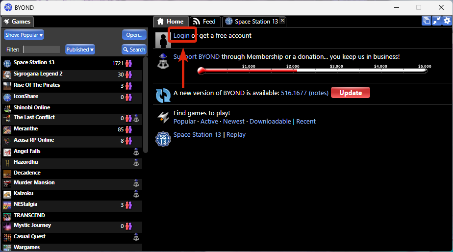

Как зайти на сервер
Подключение к игре
Для игры на нашем сервере тебе понадобятся две вещи: RadminVPN (для имитации локальной сети) и клиент BYOND.
Настройка RadminVPN
- Скачайте и установите программу с официального сайта.
- Запустите её и выберите: Сеть → Присоединиться к сети.
- Введите данные для входа:
- Имя сети:
DFка - Пароль:
000000
- Имя сети:
- Нажмите кнопку Подключиться.
Вход на сервер
- Скачайте клиент BYOND по ссылке.
- Установите его, а затем обязательно полностью закройте (проверьте системный трей) и запустите снова.
- Если у вас нет аккаунта, зарегистрируйтесь здесь.
- Логинимся: Нажмите кнопку логина в правой части клиента.

- Заходим на сервер: Нажмите кнопку Open, вставьте адрес сервера или выберите его из закладок.

Информация о сервере
✔ Адрес для подключения
IP сервера:
(Скопируйте и вставьте в BYOND: Open → URL)
byond://26.174.60.22:7777(Скопируйте и вставьте в BYOND: Open → URL)
Проведение игр и график
На сервере принята ивентовая система проведения сессий. Это значит, что игры организуются по мере возможности, а фиксированного ежедневного расписания нет.
Если на конкретный день назначен ивент, то ориентируйтесь на следующее время начала:
| Тип дня | Примерное время (МСК) |
|---|---|
| Будни | 20:00 |
| Выходные | 18:00 |
ℹ Где следить за сборами?
Точная дата и время каждого ивента публикуются заранее. Чтобы не пропустить игру, обязательно
заглядывайте в канал #cm-инфо в нашем Discord!